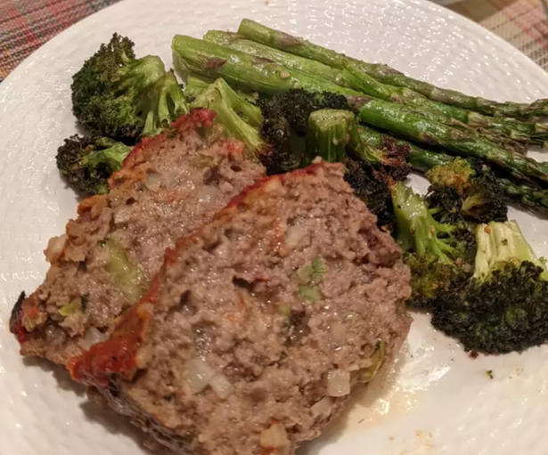

Easy Meatloaf

Description
This meatloaf is excellent for cold sandwiches in the hubby's lunchbox. Try it with onion or ranch dip instead of sour cream.
Ingredients
- 1½ pounds ground beef
- 1 egg
- 1 cup sour cream
- 2 tablespoons Worcestershire sauce
- 1 (1 ounce) package dry onion soup mix
- ½ cup grated Parmesan cheese
- 1½ cups Italian-style dried bread crumbs
Directions
- Preheat oven to 375 degrees F (190 degrees C).
- In a large bowl, combine the beef, egg, sour cream and Worcestershire sauce. Mix in soup mix, cheese, and bread crumbs. Form mixture into a loaf, and place in a 9x5 inch loaf pan. Cover with foil.
- Bake at 375 degrees F (190 degrees C) for 45 minutes. Remove foil and continue baking for another 10 to 15 minutes. Let stand 5 to 10 minutes before serving for easier slicing.
Nutrition
Per serving:
- 307 calories
- protein 14.4g
- carbohydrates 13.3g
- fat 21.6g
- cholesterol 76mg
- sodium 616.1mg